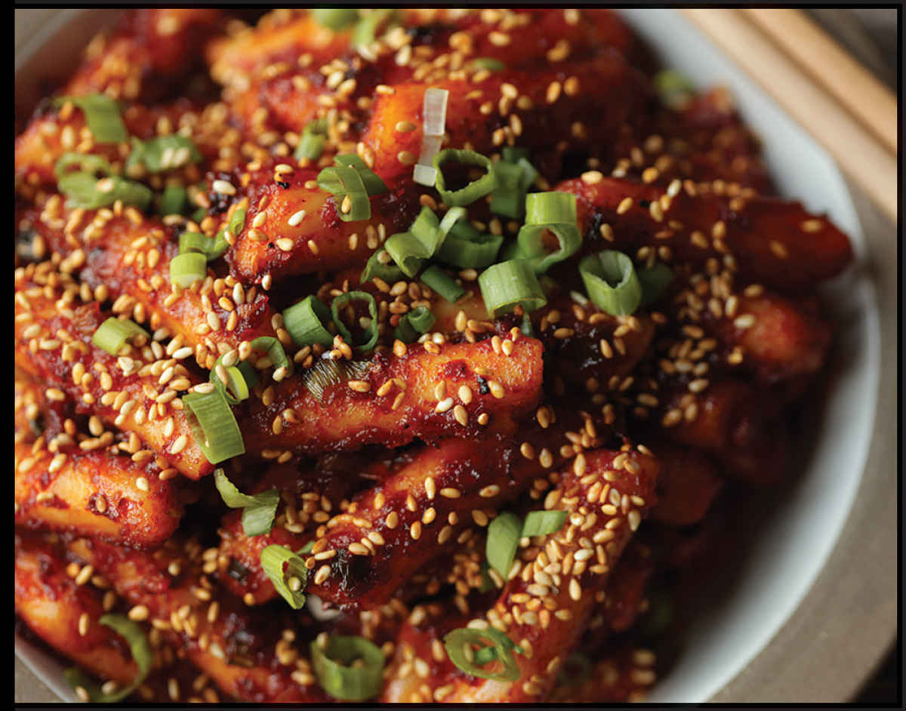
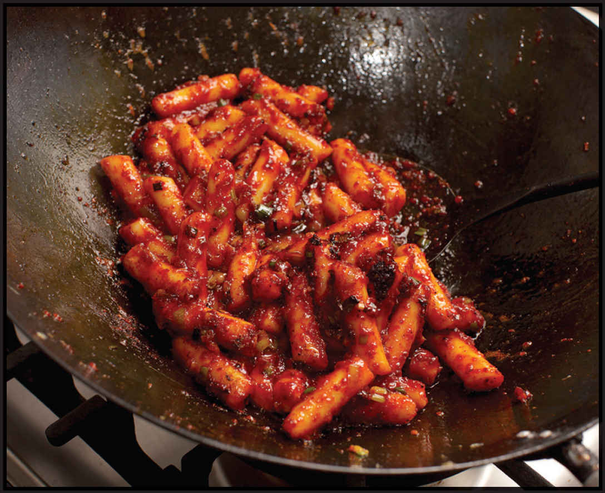

GIREUM TTEOKBOKKI (STIR-FRIED KOREAN RICE CAKES AND KOREAN CHILE PASTE)
Garae-tteok are dense, chewy rice cakes made by pounding steamed rice into a dough similar to Japanese mochi but denser and even chewier (if you can imagine). In China, they are called nian gao and take on a variety of shapes and textures (many of them sweet).
While not technically noodles, they bear a resemblance in their use as popular ingredients in both stir-fries and brothy soups and stews. When stir-fried, they’re called tteokbokki (pronounced like “duck Bucky,” with particularly hard consonants), a dish I was introduced to by my friend Soohyun Chang. As undergrad architecture students we’d split our time between the all-nighters at the studio and cheap restaurants like Color near Packard’s Corner in Boston’s Allston neighborhood, where the hearty $7 plates of shareable Korean home cooking and street food fit our appetites and our budget. Soohyun has gone on to become a renowned architect, while I ended up focusing on those rice cakes (Color has closed).
Her career may be more beautiful and functional, but I’m pretty sure mine is more delicious. You may be familiar with gungmul tteokbokki, which are rice cakes stewed in a spicy red broth or sauce (see my recipe on here), but gireum tteokbokki are its more modern, street-friendly cousins. The flavors—lots of Korean chile flakes, sesame oil, scallions, soy sauce, and a sweetener to balance out the heat—are similar, but rather than being simmered in broth, the rice sticks are slowly fried until all the liquid evaporates and the spicy-sweet seasonings form a sticky, lightly caramelized layer on the exterior of each rice cake.

Unlike most stir-fries in this book, this one works best at a leisurely pace, which allows the seasonings to reduce and concentrate to really coat the sticks as they soften. I like to add a little butter to the wok—the nutty toasted milk solids add flavor and help the rice cakes caramelize and brown a little better—but you can omit it to keep the dish vegan.
|
Yield Serves 4 |
Active Time 15 minutes Total Time 30 minutes |
This recipe is traditionally made with rod-shaped Korean-style rice cakes, but disk-shaped cakes will work as well. If using frozen rice cakes, allow an additional 10 minutes of soaking time in step 1 so they thaw. This quantity of gochujang and gochugaru will make a moderately hot dish. Add more or less to taste.
INGREDIENTS
1 pound (450 g) Korean or Chinese rice cakes
1 tablespoon (15 ml) peanut, rice bran, or other neutral oil
4 to 5 scallions, thinly sliced
1 tablespoon (7 to 8 g) minced garlic (about 3 medium cloves)
1 tablespoon (15 g) unsalted butter
2 tablespoons (30 ml) gochujang, more or less to taste (see Notes)
2 tablespoon (10 g) gochugaru, more or less to taste
2 tablespoons (24 g) sugar
2 tablespoons (30 ml) light soy sauce
1 tablespoon (30 ml) roasted sesame oil
1 tablespoon (8 g) toasted sesame seeds
DIRECTIONS
1Place the rice cakes in a large bowl and cover with water. Heat the oil in a wok over medium heat until simmering. Add the scallions and garlic and cook, stirring, until softened but not browned, about 2 minutes. Add the butter and stir until melted. Add the gochujang, gochugaru, sugar, soy sauce, and sesame oil. Drain the rice cakes and add to the wok with whatever water is clinging to them.
2Cook, stirring frequently, until the sauce is completely reduced, the oil breaks out, and the rice cakes and scallions start to sizzle and brown in spots, about 10 minutes. Take your time here; the goal is a gentle, even cook so that the rice cakes are very soft and fully coated in the chile and oil as they tenderize—reduce the heat if they are sizzled very hard or the sauce seems like it’ll reduce down before the 10-minute mark. When the rice cakes are soft and caramelized, season to taste with more chile flakes, stir in the sesame seeds, transfer to a plate, and serve, preferably with toothpicks.
